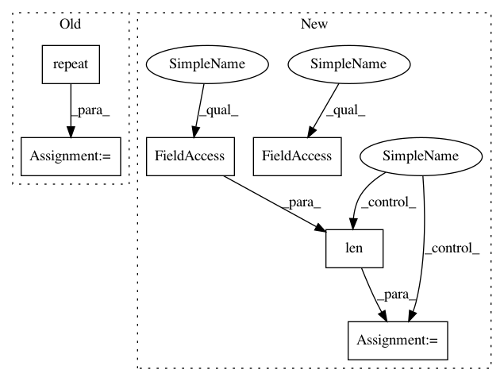

122c24b4aeb11ecba5f77c3bf5ef8f20f2167c77,utils/datasets.py,ListDataset,__getitem__,#ListDataset#Any#,57
Before Change
// Black and white images
if len(img.shape) == 2:
img = np.repeat(img[:, :, np.newaxis], 3, axis=2)
h, w, _ = img.shape
dim_diff = np.abs(h - w)
// Upper (left) and lower (right) padding
After Change
// Handles images with less than three channels
while len(img.shape) != 3:
index += 1
img_path = self.img_files[index % len(self.img_files)].rstrip()
img = np.array(Image.open(img_path))
h, w, _ = img.shape
dim_diff = np.abs(h - w)
In pattern: SUPERPATTERN
Frequency: 3
Non-data size: 6
Instances
Project Name: eriklindernoren/PyTorch-YOLOv3
Commit Name: 122c24b4aeb11ecba5f77c3bf5ef8f20f2167c77
Time: 2018-06-07
Author: eriklindernoren@gmail.com
File Name: utils/datasets.py
Class Name: ListDataset
Method Name: __getitem__
Project Name: tensorflow/models
Commit Name: b67a85381ec138751f214ee992bb3210dbcb4d95
Time: 2020-08-07
Author: yeqing@google.com
File Name: official/core/input_reader.py
Class Name: InputReader
Method Name: _read_sharded_files
Project Name: tensorflow/models
Commit Name: 9d88abe8e238691046d8919648e871fe4180839c
Time: 2020-08-07
Author: yeqing@google.com
File Name: official/core/input_reader.py
Class Name: InputReader
Method Name: _read_sharded_files
Project Name: eriklindernoren/PyTorch-YOLOv3
Commit Name: 122c24b4aeb11ecba5f77c3bf5ef8f20f2167c77
Time: 2018-06-07
Author: eriklindernoren@gmail.com
File Name: utils/datasets.py
Class Name: ListDataset
Method Name: __getitem__